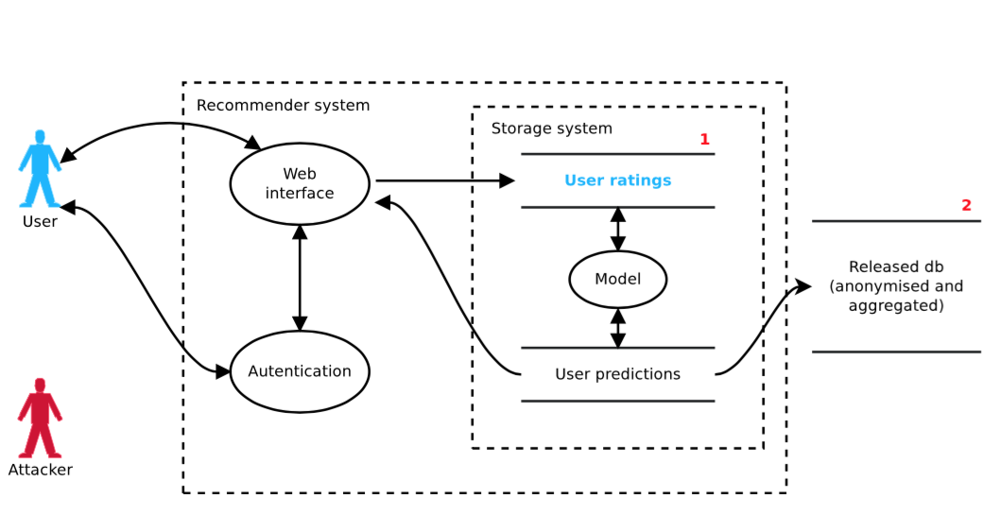
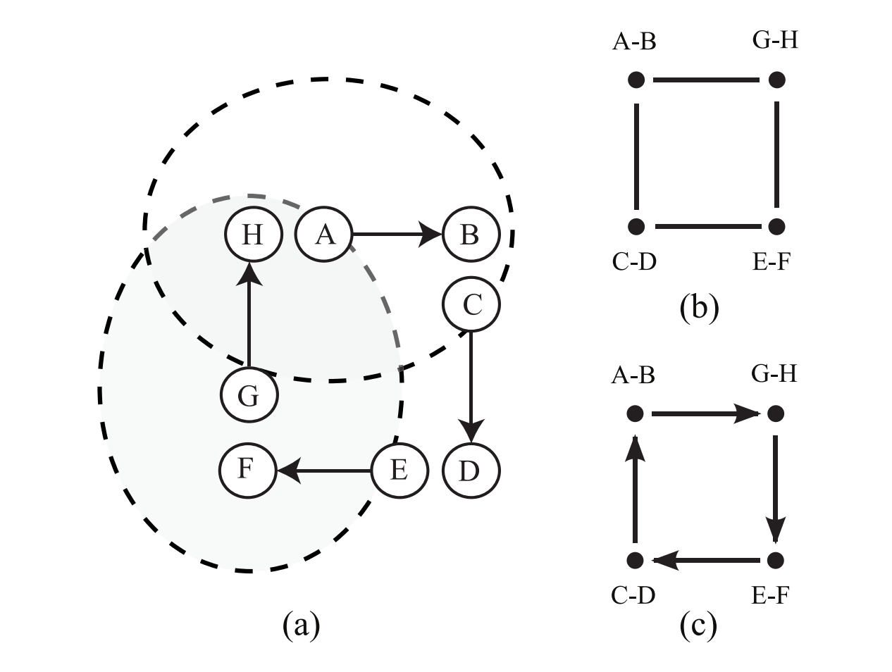
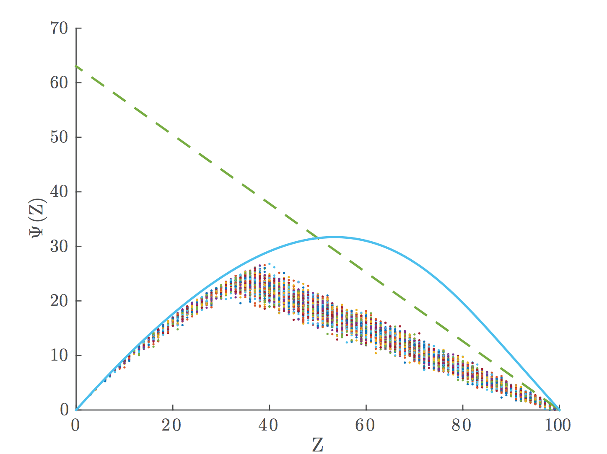
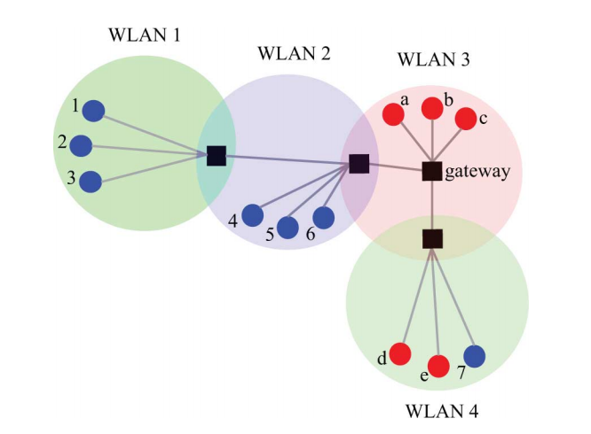
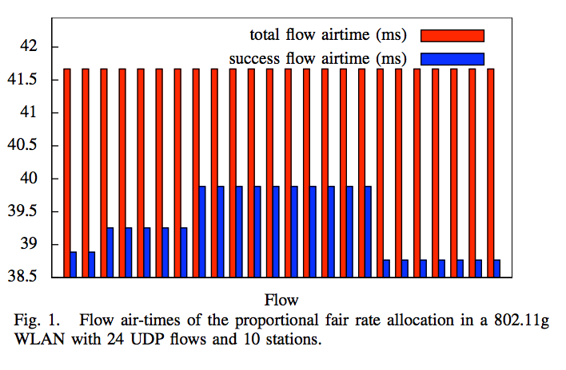
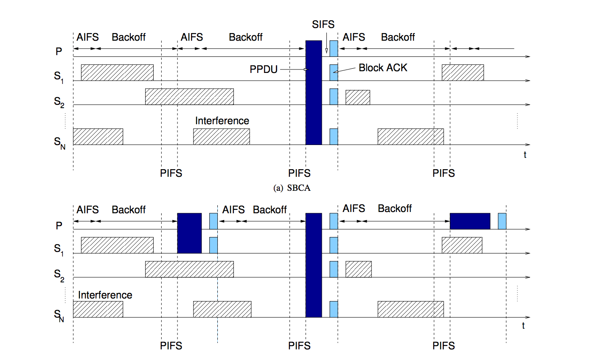
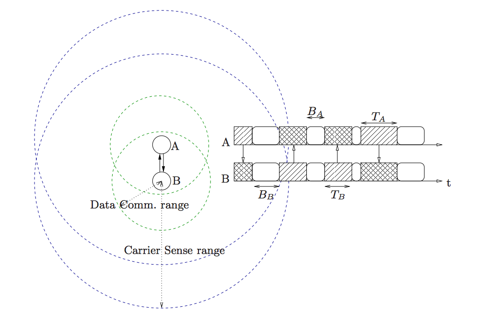
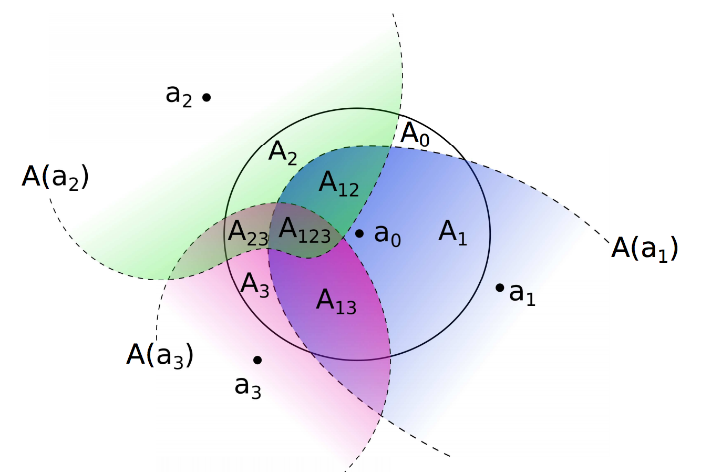
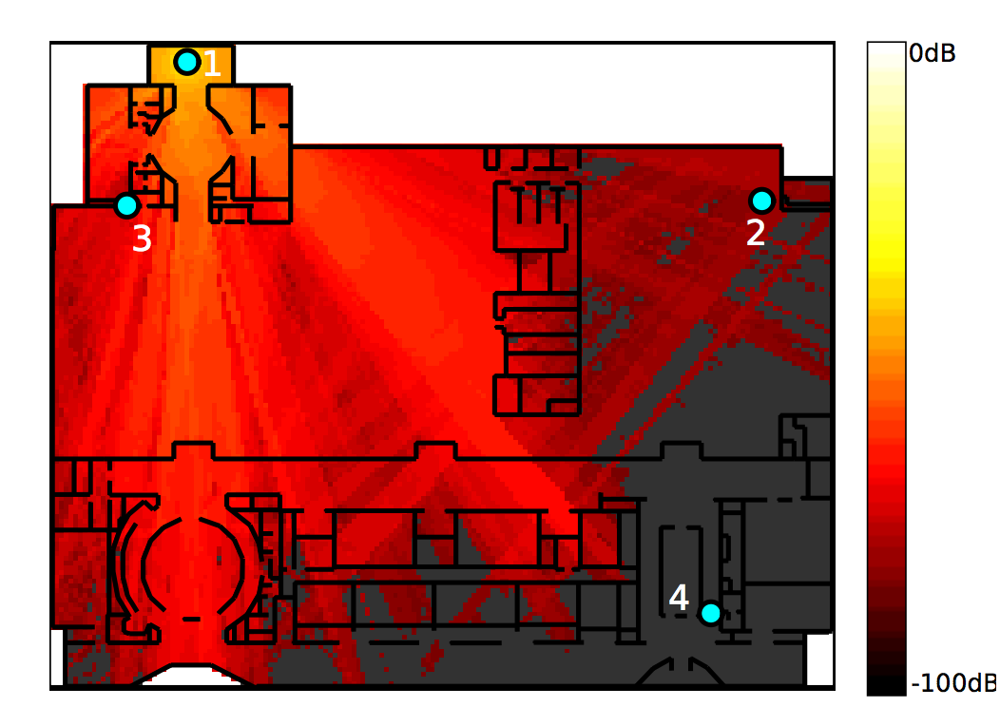
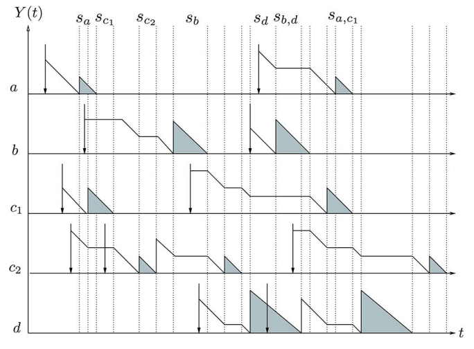

Mathematical engineer, particularly interested in graph theory, Markov chains, stochastic processes and randomised optmisation algorithms. Currently working on crowdsourcing, human computation and privacy issues in recommender systems. Also interested in high performance parallel computing and big data analysis.
| Feb 2015 |
Ph.D. in Mathematics
Hamilton Institute Design of decentralised algorithms applied to channel/code selection and convex optimisation for throughput fairness of 802.11 networks |
| 2010 |
M.Sc. in Mathematical Engineering
University of Roma "Tor Vergata" 110/110 with great distinction. Thesis on Monte Carlo Markov Chain methods for the approximate solutions of feature selection problems |
| 2009 |
Erasmus Scholarship
Universiteit Gent, Department of Telecommunications Queuing Behaviour of Statistical Multiplexer with Spacing |
| 2007 |
B.Sc. in Mathematical Engineering
University of Roma "Tor Vergata" 110/110 with great distinction. Thesis on Wavelet analysis for recognition of form document images with complicated background |
| 2017 - present |
Information School, University of Sheffield, Dr. Gianluca Demartini Research Associate on the H2020-funded project FashionBrain on Crowsourcing and recommender systems |
| 2016 |
Information School, University of Sheffield, Dr. Gianluca Demartini Research Associate on the EPSRC-funded project BetterCrowd on Crowsourcing and recommender systems |
| 2016 |
Science Foundation Ireland and Trinity College Dublin, Prof. Doug Leith Recipient of Technology Innovation Development Award (TIDA) 2016 on Privacy issues in recommender systems and probabilistic matrix factorisation |
| 2015 |
Statistics and Computer Science Department, Trinity College Dublin, Prof. Doug Leith Postdoctoral Researcher on Privacy issues in recommender systems and probabilistic matrix factorisation |
|  |
BLC: Private Matrix Factorization Recommenders via Automatic Group Learning A. Checco, G. Bianchi, and D. Leith ACM Transactions on ACM Transactions on Privacy and Security (TOPS) 2017 [1] [pdf] |
|  |
Learning-Based Constraint Satisfaction With Sensing Restrictions A. Checco and D. Leith IEEE Journal of Selected Topics in Signal Processing 2013 [2] [pdf] |
|  |
Fast, Responsive Decentralised Graph Colouring A. Checco and D. Leith arXiv preprint arXiv:1405.6987 2014 [3] [pdf] |
|  |
Fair Virtualisation of 802.11 Networks A. Checco and D. Leith IEEE/ACM Transactions on Networking 2013 [4] [pdf] |
|  |
Proportional Fairness in 802.11 Wireless LANs A. Checco and D. Leith IEEE Communications Letters 2011 [5] [pdf] |
|  |
Channel Bonding in Short-Range WLANs B. Bellalta, A. Faridi, J. Barcelo, A. Checco, and P. Chatzimisios European Wireless 2014 [6] [pdf] |
|  |
Throughput Analysis in CSMA/CA Networks using Continuous Time Markov Networks: A Tutorial B. Bellalta, A. Zocca, C. Cano, A. Checco, J. Barcelo, and A. Vinel arXiv preprint arXiv:1404.0180 2014 [7] [pdf] |
|  |
Using Crowd sourcing for Local Topology Discovery in Wireless Networks A. Checco, C. Lancia, and D. Leith arXiv preprint arXiv:1401.1551 2014 [8] [pdf] |
|  |
Self-configuration of Scrambling codes for WCDMA Small Cell Networks A. Checco, R. Razavi, D. Leith, and H. Claussen IEEE 23rd International Symposium on Personal Indoor and Mobile Radio Communications (PIMRC) 2012 [9] [pdf] |
|  |
On the interactions between multiple overlapping WLANs using channel bonding B. Bellalta, A. Checco, A. Zocca, and J. Barcelo IEEE Transactions on Vehicular Technology 2016 [10] |
| 2011 - 2012 | Bell Laboratories Ireland, Intern |
|
| Languages |
Bash, C, C++, CSS, Matlab, JavaScript, Fortran, HTML, LaTeX, Mathematica, Python, R |
| Frameworks |
Spark, Cloudera, Pandas, NumPy, SciPy, SimPy, scikit-learn |
| Algorithm design |
Design, convergence rate and complexity analysis of decentralised algorithms on graphs |
| Convex optimisation |
Convex optimisation, with application to discrete problems. Numerical methods for approximate solution of optimisation problems |
| Data Mining |
Monte Carlo Markov chains techniques for data mining and feature selection |
| Privacy in recommender systems |
Probabilistic matrix factorisation applied to recommender systems, with focus on privacy issues |
| Simulators |
Event-based simulators design for wireless network analysis |
| Statistical inference |
Bayesian modelling and exploratory data analysis, with focus on big data |
| Pairwise, Magnitude, or Stars: What's the Best Way for Crowds to Rate? | March 19, 2017 |
Last updated on 2017-03-19
 Alessandro Checco
Alessandro Checco